ÓRBITA 3.2 · intranet suite for HCL DX Compose CF238/CF239 · EUROPESIP
The ÓRBITA apps, explained simply
What the eleven apps are, how they are built inside, how they evolved from WebSphere Portal 8.5 to
version 3.2, and how to install them with Helm, step by step.
Repositoryhttps://github.com/europesip/orbita · chart oci://ghcr.io/europesip/charts/hcl-dx-orbita ·
images in ghcr.io/europesip/orbita (public)
ÓRBITA is an employee intranet for HCL DX Compose: a home page with company news, time tracking,
holidays, expenses, HR communication, the people directory, documents and surveys. Managers approve from an inbox, and
an AI assistant can do almost all of it in plain language.
AnalogyIf DX Compose is the company building, ÓRBITA is everything on the HR floor: the
notice board at the entrance (the home page), the service desks (the pages), the back office where the paperwork is done
(the API) and the filing cabinet (PostgreSQL). The notices on the board are not kept by ÓRBITA: they are WCM content,
DX's own content manager.
The eleven apps
HomeThe first page: WCM news in eleven designs,
HR notices to acknowledge, upcoming events and holidays, celebrations, the open survey and quick links. Sixteen home
page designs.
My intranetThe personal dashboard: quick clock-in, hours
of the last weeks, holidays, expenses, what you have to approve, who is out, new payslips and notifications.
Time trackingClock in · Clock out · Back; breaks with a
reason, office or remote, the day's timeline, monthly record and corrections (Spanish working-time record, RDL 8/2019).
HolidaysThe year's balance, the whole year in a
calendar where days are requested by dragging, and the team schedule.
Expenses and travelExpense reports with receipts (photo or
PDF, read with OCR in the browser), policy per category, trips and payment by Finance.
ApprovalsThe manager's inbox: absences, corrections,
expense reports and trips, with how many people are out on those days.
HR communicationNotices with read receipts,
private questions to HR with suggested answers, and an FAQ.
PeopleDirectory with today's availability, profiles
with photos, org chart, celebrations and peer recognition.
My documentsPayslips with their amounts,
certificates, contracts with acknowledgement of receipt, and uploads to HR. Managers see nothing of their team.
SurveysEngagement and pulse surveys, anonymous by
design: templates, eight question types, report with favourability, eNPS, heat map and action plan.
Time clock kioskA tablet at the entrance: everyone clocks
in with their PIN or by showing their badge's QR code to the camera.
The ones in bluearrived after 2.x. Version 2.2.1 (the one in
the previous manual) had six apps; now there are eleven.
2 · A look at the apps
This is how they look in DX Compose, with DX's own style: Inter typeface, DX blue, thin borders and IBM
Carbon icons. Screenshots from the lab with the demo users.
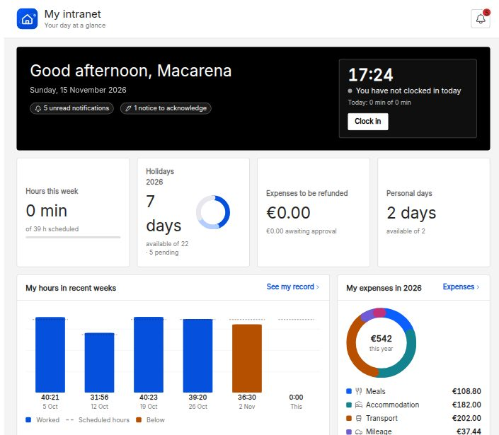
My intranet: everyone's dashboard.
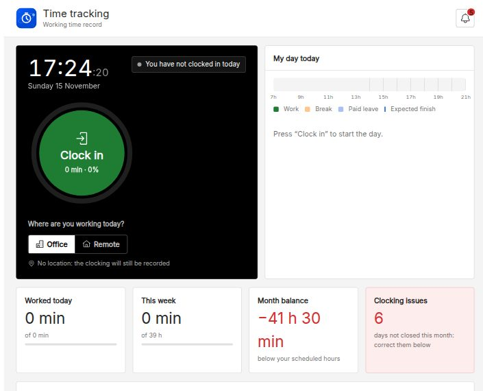
Time tracking: the big button and the day's timeline.
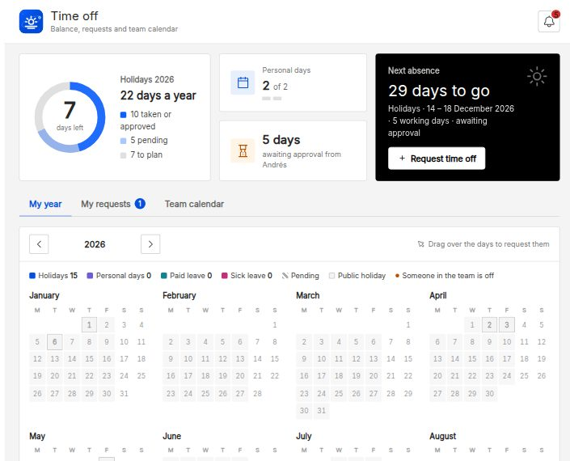
Holidays: balance and the year's calendar.
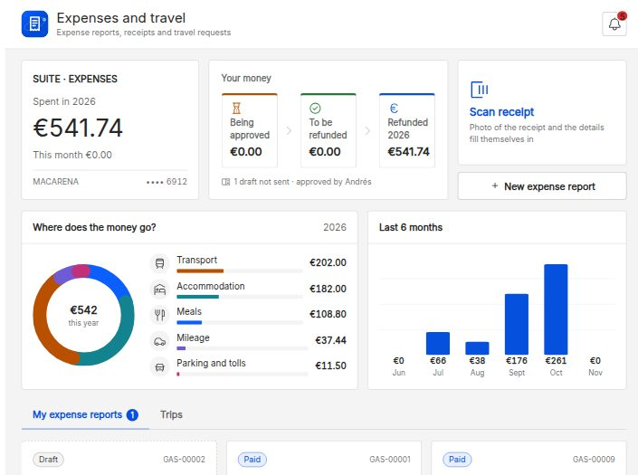
Expenses and travel: reports, receipts and policy.
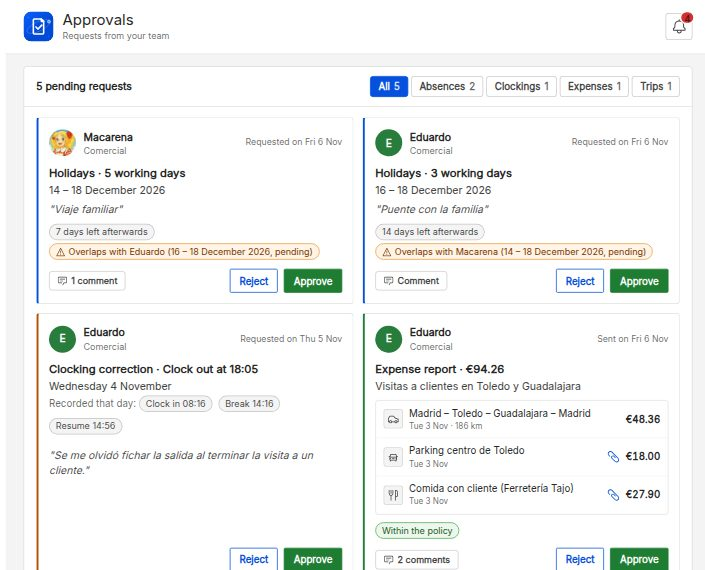
Approvals: the manager's inbox.
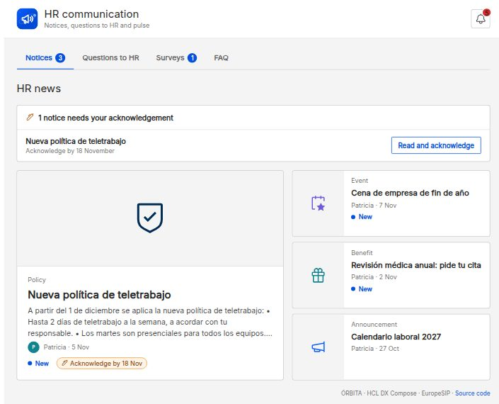
HR communication: notices as news.
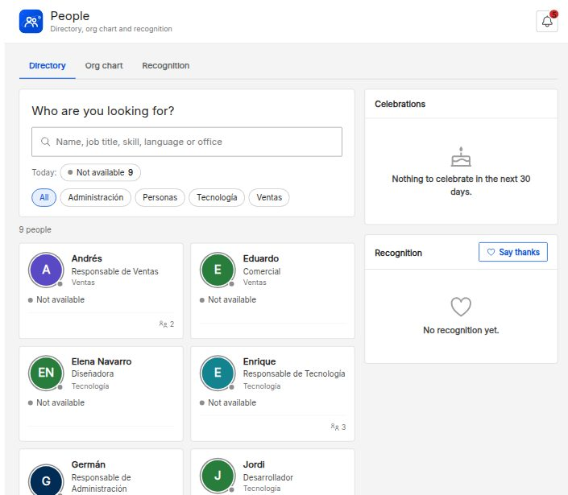
People: directory with photos and availability.
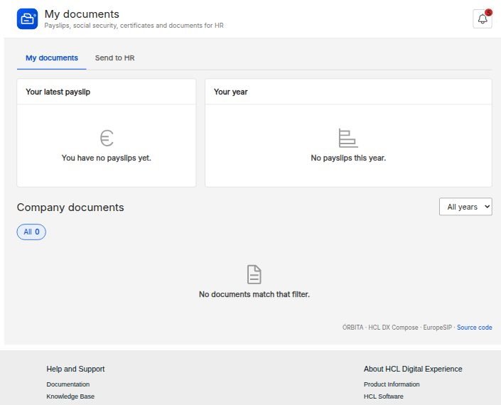
My documents: the latest payslip and the year.
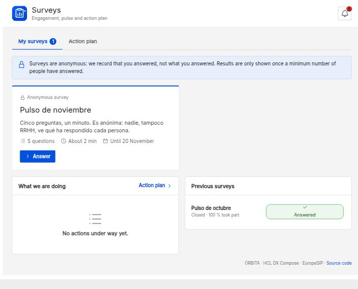
Surveys: answer and report.
And what they all share
Feature
What it does
“Ask ÓRBITA” assistant
A chat in a side panel that acts as the user who asks, with 43 tools: “how many
holiday days do I have left?”, “clock me in, working remotely”, “who is Jordi's manager?”. By default it uses the model
through LiteLLM; it can also be the HCL DX IQ chat (section 9).
Photos
Everyone sets their own in People (or HR does it for them). It shows in every app, in the portal
header and in the DX toolbar. Without a photo, the initials.
Spanish and English
Interface, dates, amounts and notifications in the language of each user's DX profile.
The demo data is in Spanish.
Privacy
Managers do not see questions to HR; surveys store answers without user or time; the directory never
shows the reason for an absence; payslips are seen only by their owner, HR and Finance.
3 · The home page and the WCM news
Home is ÓRBITA's first page. Its news items are HCL DX WCM content: the chart prepares the library and
the templates, anybody proposes a news item from ÓRBITA, and HR reviews it and publishes it in WCM.
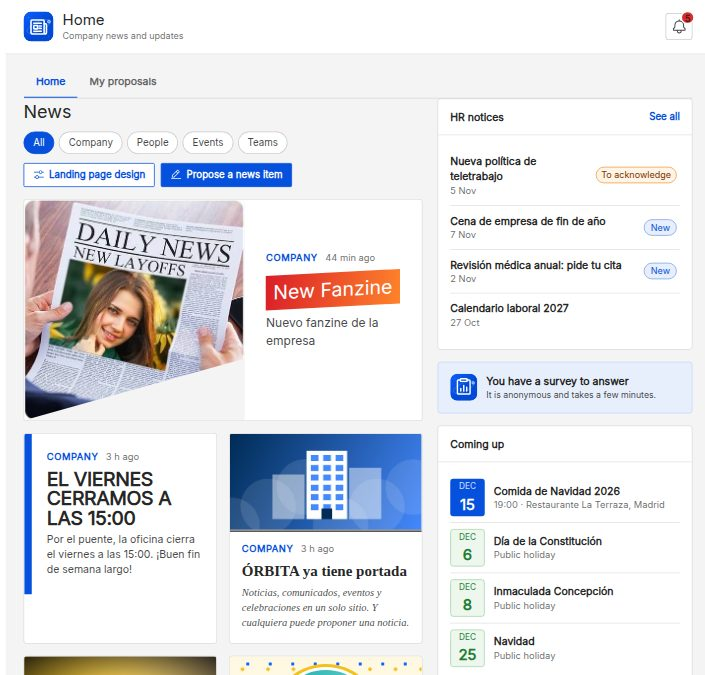
Home (classic design): news on the left; HR notices,
survey and upcoming events on the right.
Analogy: the company newspaperWCM is the printing press and the
archive: it keeps every story with its template. ÓRBITA is the newsroom: anybody can bring an article, the editor
(HR) corrects it and sends it to print. Home is the newsstand where it is read.
What the chart prepares in WCM
Library
orbita-noticias: readable by every authenticated user; Editor for
news.editors.
Sections
empresa · personas · eventos · equipos (company, people, events, teams)
Templates
news · brief · event · welcome · achievement, each with its presentation template
Demo
six news items, with their images in the DAM collection “ÓRBITA Noticias”
Done by files/noticias.mjs in the install Job, after the theme. It is idempotent: what already
exists is kept.
From proposal to home page
1 · Proposemacarena picks a template and fills in the form ÓRBITA builds from it
→
2 · Senda preview, then off to review (state REVISION); HR is notified
→
3 · Review (HR)correct, return with a comment, reject or publish
→
4 · Publish in WCMpatricia's browser creates the content with Editor rights
→
5 · Homeeverybody reads it; the author is notified
Template element
How ÓRBITA's form fills it in
Rich text
A simple editor (bold, lists, headings, links). Cleaned with an allowlist on the server and in the browser.
Short text whose name starts with…
Imagen → image upload (redrawn as JPEG, up to 1600 px, no metadata) ·
Fecha → date and time · Enlace → link · Diseno → design picker · other → text
Eleven designs for each news item
Chosen with thumbnails in the form and stored in the WCM element Diseno. Applied to the home page card, the
reader and the preview. Each template suggests one.
Classicimage and text (news)
Coverfull-page image with the headline on top
Two columnstext in two columns
Postercolour block with headline and key details (brief)
Quotethe standfirst as a quote
Magazinenewspaper headline, drop cap
Cinemablack, vignette, huge gradient headline
Headlinegiant capitals and an offset image
Diagonalcut image and a tilted band
Countdownlive days, hours and minutes (event)
Celebrationconfetti and a round image (welcome, achievement)
Any other value?Anything unknown is shown as classic.
Sixteen home page designs
HR chooses the company's; each person can choose another one for themselves and go back to the company's at any time.
They are previewed live behind the chooser, stored in the table AJUSTE (migration V9), and the animations
respect the system's reduce-motion setting.
carousel · night (dark background) · stories (each item full screen with a
dot index and a progress bar)
Showcase
orbit (the featured item as a planet, the rest as satellites on two rotating orbits) ·
neon (glowing grid and glass cards) · constellation (stars joined by lines) · 3D carousel (ring in
perspective with a reflection) · bubbles (news float and grow on hover)
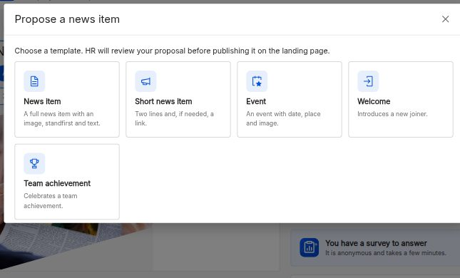
Propose: pick the WCM template.
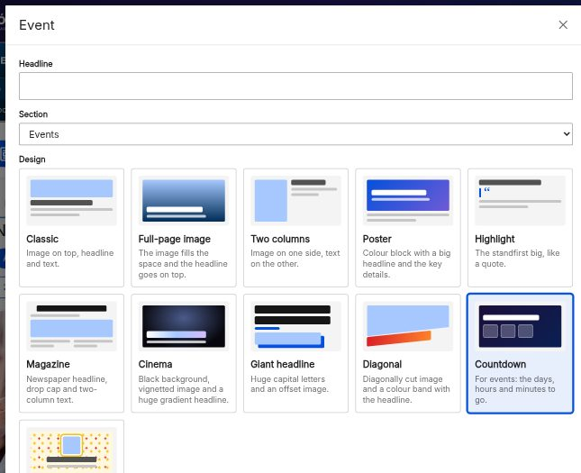
The form built from the template.
Why is the review in ÓRBITA and not in a WCM workflow?Tested on CF238: with a WCM workflow,
POST /wcmrest-v2/item/{id}/approve works for the DX administrator but answers 403 to users with the Reviewer
role (even Manager). Reviewing in ÓRBITA, employees only need read access in WCM, and editors publish. They can still use
Content Composer. Who publishes: the users in news.editors (in the labs, the group cn=dxmarketing,
where patricia is).
4 · Demo users and rules
Nobody is created: the demo story is written as roles, and each role is played by a DX user who already
exists.
Analogy: a playThe script (the demo data) has characters: the HR person, the sales
manager, a sales rep… The chart only needs to know which actor (which DX user) plays each role. That is the value
demo.people. By default, the actors are the users of the labs' OpenLDAP.
Employeeclocks in, requests, sees their own data, proposes news
⊂
Manager+ sees their team and approves its requests
⊂
HR+ the whole staff, notices, surveys, documents, reviews news, restores the demo
·
Finance+ pays approved reports and publishes payslips
Role
User (labs)
Role in ÓRBITA
Kiosk PIN
rrhh
patricia
HR: the whole staff; reviews and publishes news (Editor in WCM)
1000
ventas-responsable
andres
Sales manager: approves the team
2001
ventas-1
macarena
Sales rep
1111
ventas-2
eduardo
Sales rep
2222
tecnologia-responsable
enrique
Technology manager
3001
tecnologia-1
jordi
Developer
3333
administracion
german
Finance: pays expense reports, publishes payslips
6001
tecnologia-2, -3
(fictitious)
Appear in the data; nobody signs in with them
4444, 5555
PasswordsThose of these users in your directory (in the labs, the Lab 2A OpenLDAP). ÓRBITA stores
no passwords.
Start the demo againHR › Time tracking › Reports › Restore demo data. The data is relative to the
day it is loaded. WCM news are not touched.
Business rules worth knowing
Topic
Rule
Working hours
Monday to Thursday 8 h, Friday 7 h (39 h a week). National holidays loaded; HR adds local ones.
Clock entries
Never edited or deleted: a mistake is fixed with a correction the manager approves.
Breaks
Breakfast, lunch, personal errands: not working time. Doctor and customer visit: working time.
Expense policy
Meals up to €30, lodging €120/night, mileage €0.26/km, other €50. Above that, a justification is required.
Surveys
Results only from a minimum number of answers (5 by default, never below 3); a department is hidden if it could be inferred by subtraction.
5 · How it was made: four stages
ÓRBITA was born as WebSphere Portal 8.5 portlets. 1.0 brought it to DX Compose with scripts; 2.0 turned it
into a product with a single Helm chart; 3.x made it a complete intranet, integrated with DX.
Portal 8.5
A portlet WAR
React inside each JSR 286 portlet
Logic in serveResource()
Portal users
Derby database
Installed with a script
1.0.0
Migration to DX Compose
6 Script Applications
suite-api (Java 8)
Employees created in LDAP
SSO by copying LTPA keys
Scripts k8s/01…06
MCP with 2 tools
2.0 → 2.3
A product with a chart
helm install hcl-dx-orbita
Public images
DX says who the user is
REST API /orbita-api/v1
Java 21, Flyway, PostgreSQL
MCP with 26 tools
3.0 → 3.2
Intranet integrated with DX
Own assistant (LiteLLM)
Spanish and English
Sample theme with the DAM
OpenID Connect
11 apps, photos
Home with WCM news
43 AI tools
AnalogyIn Portal 8.5 each app was all-in-one: shop window, office and archive in the same
box. In 1.0 they were split into pieces, but the assembly was hand-made. In 2.0 it became flat-pack furniture:
mass-produced parts (images) and a single assembly manual (the chart). In 3.x the furniture matches the rest of the house:
it uses DX's theme, DAM, WCM and toolbar.
What changed at each step
Topic
1.0
2.x
3.x
Installation
Scripts k8s/01…06, kubectl cp
One chart: helm upgrade --install
The same chart, which also prepares theme, DAM and WCM
ÓRBITA is not from HCL, so it is installed in the namespace for third-party tools (dx-shared in
the labs), next to PostgreSQL and LiteLLM. In DX it leaves its pages, its Script Applications, its theme, its DAM images
and the news library.
Employee browser
a single host: /wps · /dx · /orbita-api
dx-demo · HCL DX Compose
Web Engine · pages /wps/myportal/Home/portada, fichaje…
WCM · 11 Script Applications (React) and the orbita-noticias library
OrbitaTheme · header, logo, user photo, assistant button
DAM · collections “ÓRBITA” (logos) and “ÓRBITA Noticias”
DX profile API · answers “this cookie belongs to macarena”
DX IQ Integrator (optional) · HCL's AI chat
dx-shared · release “orbita”
orbita-api (Open Liberty, Java 21) :9080 /orbita-api/v1 REST API and assistant :9081 /mcp tools for IQ (NetworkPolicy)
PostgreSQL (required) · database and user orbita, tables by Flyway
LiteLLM · the AI model of the own assistant
Install Jobs orbita-db: creates database and user orbita-scriptapps-push: DXClient uploads the apps, creates the pages, the theme and WCM
The “same domain” trickEverything hangs off https://<DX host>: the portal at
/wps, WCM at /wps/mycontenthandler, the API at /orbita-api. So the browser sends the
same session cookie to all of them, with no CORS and no double login. That is why Home can read WCM with the viewer's session.
What each one stores
Where
What
PostgreSQL
Clock entries, holidays, expenses, notices, questions, surveys, people profiles, photos, documents
and payslips, news proposals and their images, settings (home page design).
WCM
The published news, their templates and sections; also the code of the 11 Script Applications.
DAM
Theme logos and the images of the demo news.
DX directory
The users and their passwords (in the labs, OpenLDAP). ÓRBITA only stores the user name.
7 · Inside: the code
Three layers, like a restaurant: the dining room (what you see), the kitchen (where things are done) and the
pantry (where everything is kept). And a menu shared by dining room and kitchen: api/rutas.json.
api/rutas.json gives, for each logic operation, its HTTP method and its route. Both the server and the
interface read it, so they never get out of sync:
GET /orbita-api/v1/vacaciones/resumen → the year's balance
POST /orbita-api/v1/noticias/propuestas/7/enviar → to review (HR is notified)
PUT /orbita-api/v1/portada/diseno {"ambito":"mio","valor":"orbita"}
PUT /orbita-api/v1/personas/macarena/foto → new photo (redrawn at 256 px)
# 401 no DX session · 403 not allowed · 422 {"error":"No days left","aviso":true} · 404 · 405
A single brainThe REST API, the assistant and the MCP server call the same function,
Despachador.ejecutar(op, parameters, user). That is why the AI has exactly the same permissions as the user on
screen.
The schema evolves without losing dataFlyway migrations create and update the tables when
orbita-api starts: V1 schema · V2 notifications · V3 HR comms · V4 people · V5 documents · V6 surveys ·
V7 photos · V8 news · V9 settings. A published migration is never edited: a new one is added.
What comes from outside is cleanedThe rich text of news goes through a tag allowlist
(Html.java on the server and limpiarHtml in the browser, also for what is written in Content
Composer). Photos and images are checked by their content and redrawn: nothing of the original file survives.
8 · Who the user is: DX says so
The employee signs in to the portal once and ÓRBITA already knows who they are. It does not find out on its
own: it asks DX.
Analogy: the festival wristbandWhen you enter the portal you get a wristband (the session
cookie). In 1.0, ÓRBITA had a copy of the secret stamp to check wristbands itself (copied LTPA keys). Since 2.0, when you
arrive with your wristband, ÓRBITA calls the box office (the DX profile API) and asks “whose wristband is this?”. It keeps
no stamps, no guest lists and nobody's keys.
1 · Sign in to DXwith user and password (LDAP) or through OpenID Connect (Keycloak, Entra ID…)
→
2 · The app calls/orbita-api/v1/… with the same cookie
→
3 · orbita-api(SesionDx.java) asks DX
→
4 · The profile APIanswers “it's macarena” and the preferred language
Advantage
Why it matters
No copied LTPA keys
1.0 copied the Web Engine's (the same in every CF238 installation). No longer needed.
No LDAP configuration
ÓRBITA does not know the directory: anything DX uses will do (LDAP, Active Directory, OIDC…).
No stored credentials
The API stores no DX administrator or LDAP bind passwords.
The AI cannot impersonate
The assistant and the MCP use the user's own session: the model does not choose on whose behalf it acts.
OpenID Connect (3.1.2)With Liberty's OIDC client, the DX session cookie is not called
LtpaToken2 but WAS_n<hash>, and that cannot be changed. That is why
dx.sessionCookie accepts * prefixes; with dx.oidcSupport: true (default) it is
LtpaToken2,WAS_n*.
DX's certificateTo ask over HTTPS, the API must trust DX's certificate. If it is self-signed or from
a private CA (as in the labs), give it the CA in a Secret (dx.caSecret).
dx.insecureSkipTLSVerify exists for labs only.
The browser does the same with WCMHome reads the news from /wps/mycontenthandler/wcmrest-v2
with the viewer's session: everybody sees what WCM lets them see, and only an Editor can publish. ÓRBITA needs no technical
WCM account.
And the kiosk?Its page requires a session (the tablet signs in with a user), but its part of the API
(/v1/quiosco/…) is public: it identifies each person by PIN or QR, and the device by a key the chart generates
(Secret orbita-kiosk).
9 · AI: assistant and MCP server
The “✨ Ask ÓRBITA” button opens a chat. To talk about holidays, expenses or people, ÓRBITA lends it a toolbox
with 43 tools. There are two ways to connect it:
1 · Own assistant (default, assistant.backend: orbita)orbita-api calls the model
through LiteLLM with ÓRBITA's tools only. A small prompt: each question costs far fewer tokens than the IQ chat.
Model: assistant.model (default: IQ's alias, iq-general-purpose).
2 · HCL DX IQ (assistant.backend: iq)The IQ chat with ÓRBITA's MCP server registered
in the Integrator: the model sees DX's tools (WCM, DAM, pages) and ÓRBITA's at the same time. Meant for DX practitioners.
Every tool costs tokensIts description travels with every call to the model, used or not.
The 43 are about 7,800 tokens. With mcp.tools you publish only some areas (enabled), remove
others (disabled) or only the 29 read-only ones (readOnly: true).
Left out on purposePaying, restoring the demo, deleting, exporting, publishing notices or news,
signing documents or answering surveys are not AI tools: they are bulk, irreversible, or should be done in person.
Security
Layer
How
Identity
The chat user's DX session is used and ÓRBITA asks DX who it is. There is no “user” parameter. The MCP port 9081 is not exposed through the Ingress (NetworkPolicy).
Confirmation
Anything that changes data first returns a summary and only acts with confirmar: true.
Permissions and audit
Every operation checks what that person may do and logs ORBITA MCP auditoria herramienta=… usuario=…. Optional Bearer token (mcp.tokenSecret).
10 · How it is built and published
GitHub Actions builds, tests and publishes two images and the chart, all public. A v* tag makes a
release.
web/React + Vite
→
GitHub Actions.github/workflows/build.yml push to main → :main tag v3.2.0 → :3.2.0
→
orbita-scriptappsthe 11 built apps + noticias.mjs, tema.mjs
api/Maven, Java 21
→
build and test
→
orbita-apiOpen Liberty + orbita-api.war + orbita-mcp.war
WCM's “[$” trapWCM mistakes [$…] for one of its tags and removes it when serving the
JavaScript, which breaks the code. web/scripts/scriptapps.mjs writes it with equivalent escapes.
Flyway on Open LibertyFlyway only finds the migrations if their folder has a
flyway.location file. That is why it exists in db/migration.
11 · Tutorial · install with Helm
▶ Two secrets, one values file and one command
Before you start
You need
Details
HCL DX Compose
CF238 or CF239 on Kubernetes with an Ingress for its host, and a DX administrator for DXClient.
PostgreSQL
PostgreSQL 18 (CloudNativePG), and a Secret with a superuser (username, password). In the labs: Lab 2B.
Users
Those in demo.people (in the labs, the Lab 2A OpenLDAP users). kubectl and Helm 3.8+.
1
Secrets (once): the DX administrator for DXClient and the CA of DX's certificate.
Use the sample theme and give it the company logo (or change it later in the DAM).
theme.userPhoto
User photo in the header and in the DX toolbar (on by default).
news.enabled, news.editors, news.demo
Prepare WCM, who publishes, and whether the six demo news are loaded.
ui.header.*, ui.footer
What the apps show in their header and footer (auto: nothing the theme already shows is repeated).
In the labs, a script reads env.sh, creates the secrets and sets news.editors: DXCLIENT_ACCEPT_LICENSE=yes scripts/instalar-en-labs.sh. Optional AI: a LiteLLM (Lab 3) or HCL DX IQ.
12 · Check, IQ and walkthrough
Check
Check (scripts/verificar.sh)
What a failure means
Release orbita deployed
The helm install did not finish.
Job orbita-db completed
Check the PostgreSQL host and the superuser Secret.
orbita-api ready and Flyway up to date (V9)
See kubectl -n dx-shared logs deploy/orbita-api.
Job orbita-scriptapps-push: 11 apps in WCM
DX credentials, CA or DXClient licence.
News library and templates
See the Job's container: noticias.mjs says what it created or what failed.
/orbita-api/v1/salud → 200; /v1/yo without session → 401
Ingress or certificate.
Only with HCL DX IQ: register the MCP
The IQ Integrator must know http://orbita-api.dx-shared.svc.cluster.local:9081. HCL documents
MCP_SERVER_LIST, but it has no effect (case CS1479102): the Integrator reads the list in the ConfigMap
dx-iq-integrator. Until HCL fixes it, that list is patched:
scripts/registrar-mcp-en-iq.sh # adds ÓRBITA, restarts and shows: Fetched 43 tools from http://orbita-api…:9081
After every IQ helm upgrade, againThe IQ chart regenerates the list and ÓRBITA disappears. With
Helm 4 that upgrade also needs --force-conflicts. The own assistant needs none of this.
Demo walkthrough
macarenaclocks in, requests holidays, sends the expense report and proposes a news item
→
andressees it in Approvals (warning: eduardo asks for the same days) and approves
→
patricia (HR)publishes the news in WCM, a notice and a survey, reviews documents
→
germanpays the approved reports and publishes the payslips
Area
Try in the chat, for example
My day
“What do I have today?” · “Do I have anything to approve?”
Time tracking
“Clock me in, working remotely” · “Which days this month did I not close my time record?”
Holidays
“How many days do I have left?” · “Request holidays from 9 to 11 December”
Expenses
“Create a report ‘Visit to Seville’ and add yesterday's lunch, €42.80” · “Send it to my manager”
People
“Who knows Kubernetes?” · “Thank Jordi for the help with the demo”
HR and documents
“Is there any notice I need to acknowledge?” · “How much was I paid in October?”
Approvals
As andres: “Approve macarena's holidays” · “Reject the trip to Barcelona: tighter budget”
More sample questions in docs/ai-questions.md (in Spanish, docs/preguntas-ia.md).
New migrations are applied at start-up and the data is kept. The Script Applications are updated on their pages, which
keep their layout. In WCM only what is missing is added (for example, the Diseno element in older templates):
nothing is deleted.
After changing the themeDX caches the theme templates: to see a new header, restart the Web Engine
(or wait for the cache to expire).
Uninstall
helm -n dx-shared uninstall orbita
Left behind on purpose: the database and its Secret orbita-db, the Script Applications and pages, the theme,
the DAM collections and the news library (someone may be using them). Delete them by hand if you no longer need them, and
remove ÓRBITA from IQ's MCP list if you registered it.
Changing things (development)
New API operation
→
method in Api.java or its class
→
its route in api/rutas.json
→
the interface: api('op', {...})
Schema change
→
new file db/migration/V10__description.sql (never edit a published one)
→
applied at start-up
AI tool
→
Herramientas.TODAS
→
new image + helm upgrade
→
with IQ: registrar-mcp-en-iq.sh
News template
→
create it in WCM (or in noticias.mjs); each element's name says how it is filled in
→
ÓRBITA offers it automatically
Example: an AI tool
new Herramienta("fichaje_hoy", "Fichaje de hoy",
"Indica si el usuario ha fichado hoy, desde qué hora y cuánto lleva trabajado. Úsala para '¿he fichado?'.",
Esquema.nuevo(), true, // true = read-only; no user parameter
l -> l.api("fichaje.estado")),
Rule
Why
snake_case name
IQ only accepts letters, digits, _ and -.
Good description
It is all the model reads to decide whether to use it (and it travels with every request).
If it changes data
soloLectura = false, .confirmar() and l.pedirConfirmacion("summary") until confirmed.
14 · Version history
A summary of the repository's CHANGELOG.md, newest first.
3.2
Unreleased · a complete intranet
Home with WCM news: library, sections and five templates prepared by the chart, proposal and review in ÓRBITA, eleven news designs and sixteen home page designs (V8, V9).
Photos in People and every app; the user's photo in the theme header and the DX toolbar (V7).
Surveys as an app of its own: templates, eight question types, report, heat map and action plan (V6).
My documents: payslips with amounts, certificates, acknowledgements and uploads to HR (V5).
People: directory, org chart, celebrations and recognition; an icon of its own for each app (V4).
HR communication: notices, questions, FAQ; the DX Compose look in every app (V3).
AI: from 26 to 43 tools (HR comms, surveys, people and documents).
3.1.2
DX with OpenID Connect
Liberty OIDC WAS_n* cookies
(dx.oidcSupport, dx.sessionCookie with prefixes). Tested with CF239 and Keycloak 26.8.
3.1.1
Nothing repeated with the theme
ui.header.* set to auto;
FAQ and presentation in EN and ES.
3.1.0
Sample theme integrated with the DAM
A copy of the Portal 8.5 theme with the
company logo, “Powered by HCL Software” and the assistant button; images in the DAM collection “ÓRBITA”.
3.0.0
Own assistant, in Spanish and English
Assistant through LiteLLM (default) or
IQ; language from the DX profile; per-app settings on its page.
2.3.0
Adapts to your theme
ui.header.* and ui.footer;
install without pages; first illustrated manual.
2.2
Choose tools · ask in English
mcp.tools (enabled, disabled,
readOnly); the assistant answers in the language of the question.
2.1.0
The AI does much more
26 tools (previously 2); anything that changes data asks
for confirmation; public repository, images and chart.
2.0.0
Helm chart
A chart instead of scripts; DX says who the user is; users by role;
Flyway; PostgreSQL only; REST API /orbita-api/v1; PolyForm Noncommercial.
1.0.0
First version for DX Compose
Portal 8.5 migrated to CF238 without portlets: six
Script Applications and suite-api; scripts k8s/01…06; copied LTPA keys; MCP with 2 tools.
Why is 3.2 “unreleased”?Everything in 3.2 is in the repository and tested on the lab cluster, but
the published chart still pins the 3.1.2 images. A v3.2.0 tag will build the new images.
15 · Pitfalls and cheat sheet
Pitfall
What happens and what to do
IQ loses ÓRBITA
After every IQ helm upgrade: run scripts/registrar-mcp-en-iq.sh again (HCL bug CS1479102).
You change mcp.tools and nothing happens
The Integrator reads the tools at start-up: kubectl -n dx-demo rollout restart deployment/dx-iq-integrator.
HR cannot publish a news item
Not an Editor in the library: add their group to news.editors and reinstall (or grant access in WCM).
Approving in a WCM workflow returns 403
On CF238 the WCM REST API only lets administrators approve: that is why the review is in ÓRBITA.
5 ideas to remember1. The interface is 11 Script Applications in WCM.
2. The logic is orbita-api, installed with a chart. 3. DX says who the user is: ÓRBITA keeps no keys.
4. News are WCM content; ÓRBITA proposes and reviews them. 5. The AI uses the same logic and permissions.
Where to go nextgithub.com/europesip/orbita README.md · CHANGELOG.md
docs/ESPECIFICACION.md · docs/specs/ docs/mcp.md · docs/ai-questions.md · docs/faq.md
chart/hcl-dx-orbita/values.yaml Services: www.europesip.com PolyForm Noncommercial 1.0.0: commercial use requires an agreement with EUROPESIP.